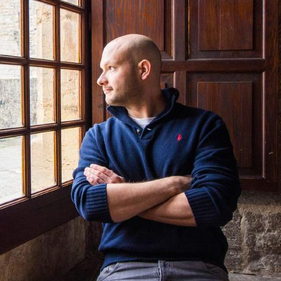

I work in the Java Platform Group at Oracle, advancing the Java programming language in OpenJDK through language design, the JDK Enhancement Proposal (JEP) process, javac implementation, and authorship of the Java Language Specification (JLS). My current work focuses on pattern matching and broader language evolution under Project Amber.
Previously, I worked on the Scala 3 compiler as a postdoctoral researcher at EPFL with Martin Odersky. I earned my PhD at the University of Athens under Yannis Smaragdakis, where my research focused on programming languages and high-performance stream processing, with publications at POPL, OOPSLA, and ECOOP.
Elected JDK Committer in 2023 and JDK Project Reviewer in 2024.
Get in touch: biboudis att gmail dott com